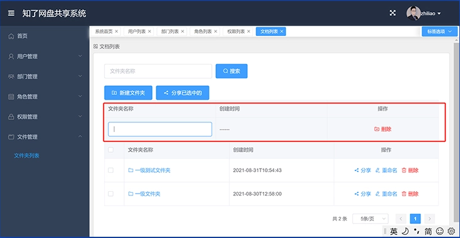
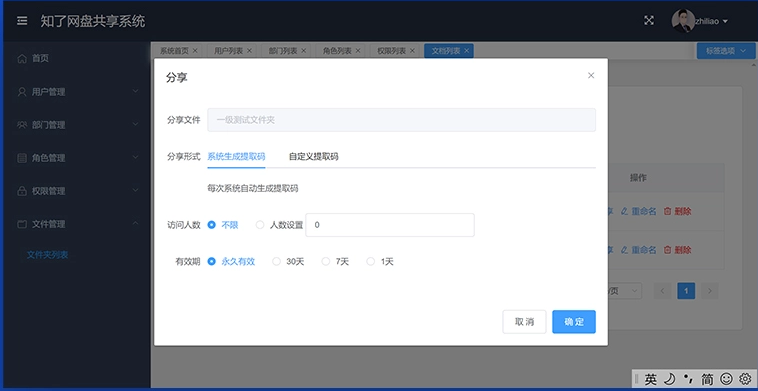
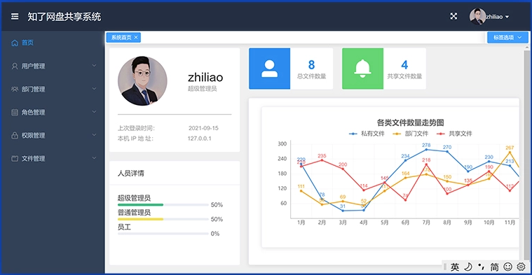
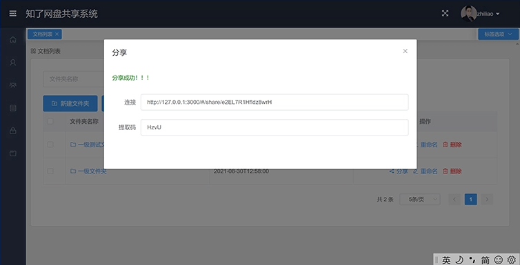

FastApi入门与项目实战,打造高性能网盘系统
FastApi入门到实战，用FastApi打造高性能的网盘系统，让你真正的学以致用。FastAPI是Python工程师的必备技能。
课程优势：
1、一网打尽：Pydantic模型，typing,FastAPI基础到FastAPI进阶，这里你都能学到。
2、步步为营：从基础到实战，带你系统学习FastAPI，快速开发出自己的实战项目。
3、前后端分离：用Vue3结合FastAPI，学完本课程，就可以自己独立完成"前后端分离"的项目，不再发担心前端和接口如何整合。
课程售价:269元
购买联系微信:VIPdjango

关于课程收看方法：
购买后，可以通过手机、电脑在线播放，永久观看。
相关素材与文档:
购买后统一加售后群分发，群内有老师在线解惑。
项目截图：




============================================================================
课程目录：
章节1∶ 前奏
课时1
【前奏】课程大纲
课时2
【前奏】fastapi介绍
课时3
【前奏】虚拟环境搭建
课时4
【前奏】类型提示
课时5
【前奏】python中的typing（一）
课时6
【前奏】python中的typing（二）
课时7
【前奏】pydantic模型介绍及使用
课时8
【前奏】pydantic模型字段属性
课时9
【前奏】pydantic模型嵌套
课时10
【前奏】pydantic模型之错误信息及自定义错误信息
课时11
【前奏】pydantic模型之自定义错误模板
章节2∶FastApi基础
课时12
【fastapi基础】初识fastapi
课时13
【fastapi基础】FsapApi实例化参数详解
课时14
【fastapI基础】get请求之路径参数
课时15
【fastapi基础】】get请求之查询参数
课时16
【fastapi基础】get请求之默认参数及其他注意项
课时17
【fastapi基础】get请求之数据校验
课时18
【fastapi基础】post请求之参数获取一
课时19
【fastapi基础】post请求之参数获取二（模型的方式）
课时20
【fastapi基础】post请求之参数获取三（模型嵌套）
课时21
【fastapi基础】post请求之form-dat
课时22
【fastapi基础】post请求之数据校验
课时23
【fastapi基础】返回数据的几种方式
课时24
【fastapi基础】返回模型及注意事项
课时25
【fastapi基础】响应体装饰器参数总结
课时26
【fastapit基础】单文件上传
课时27
【fastapi基础】多文件上传及注意事项
课时28
【fastapi基础】获取cookie
课时29
【fastapi基础】设置cookie
课时30
【fastapi基础】复现跨域请求
课时31
【fastapi基础】解决跨域请求
课时32
【fastapi基础】Oauth2介绍及简单使用
课时33
【fastapi基础】Oauth2之token认证（流程分析）
课时34
【fastapi基础】Oauth2之token认证（生成token）
课时35
【fastapi基础】Oauth2之token认证（校验token）
课时36
【fastapi基础】自定义中间件
课时37
【fastapi基础】】RequestResponse补充
课时38
【fastapi基础】简单依赖注入
课时39
【fastapi基础】类依赖注入及参数说明
课时40
【fastapi基础】多个依赖注入及注意项
课时41
【fastapi基础】数据库-连接数据库
课时42
【fastapi基础】数据库一创建模型
课时43
【fastapi基础】数据库-与fastapi整合
课时44
【fastapi基础】数据库添力数据
课时4
【【fastapi基础】数据库--修改数据
课时46
【fastapi基础】数据库一删除数据
课时47
【fastapi基础】数据库--查询数据
课时48
【fastapi基础】数据库字段属性
课时49
【fastapi基础】项目拆分
课时50
【fastapi基础】async介绍
课时51
【fastapi基础】async-BackgroundTasks
课时52
【fastapi基础】静态文件的访问
课时53
【fastapi基础】websocket一后端编写完成
课时54
【fastapi基础】websocket-前端编写完成
课时55
【fastapi基础】事件
课时56
【fastapi基础】pytest测试
课时57
【fastapi基础】fastapi结合pytest使用
章节3∶实战∶vue3+fastapi打造网盘分享系统
【实战】实战介绍
课时58 课时59
【vue3】node环境搭建
课时60
【vue3】创建vue3项目及项目结构介绍
课时61
【vue3】模板结构介绍
课时62
【vue3】项目模块分析
课时63
【登录模块】解决跨域请求及连接数据库【登录模块】用户和部门模型创建
课时64 课时65
【登录模块】生成token及数据校验【登录模块】校验token
课时66 课时67
【登录模块】router和axios的使用
课时68
【登录模块】vue登录逻辑完成
课时69
【登录模块】浏览器缓存token及用户信息
课时70
【登录模块】vue校验token并拦截路由
课时71
【首页模块】获取首页数据并携带token
课时72
【首页模块】首页数据动态渲染
课时73
【首页模块】首页图表数据动态渲染
课时74
【首页模块】vue响应拦截器判断token是否过期
课时75
【首页模块】vue请求拦截器携带token
课时76
【用户模块】前端列表分页页面优化
课时77
【用户模块】vue端分页等功能完善
课时78
【用户模块】启用停用功能完成
课时79
【用户模块】分页功能完善
课时80
【用户模块】后端分页逻辑完成
课时81
【用户模块】编辑3弹单框优化
课时82
【用户模块】编辑后端功能完成
课时83
【用户模块】前端编辑功能完成
课时84
【用户模块】登录时间、登录IP的更新及api文档的优化
课时85
【用户模块】删除用户
课时86
【用户模块】添加用户
课时87
【用户模块】搜索功能完成
课时88
【用户模块】已停用的用户登录限制
课时89
【部门模块】前端修改完善
课时90
【部门模块】分页功能完成
课时91
【部门模块】增删改搜索功能完成
课时92
【用户模块】添加用户时关联部门
课时93
【用户模块】显示及编辑关联部门
课时94
【用户模块】双条件搜索
课时95
【用户模块】搜索功能优化
课时96
【角色模块】列表分页完成
课时97
【角色模块】增删改搜索功能完成
课时98
【权限模块】模型字段设计
课时99
【权限模块】权限分页完成
课时100
【权限模块】父级菜单和菜单级别两个字段的处理显示
课时101
【权限模块】编辑及父级菜单的回显
课时102
【权限模块】编辑权限功能完成
课时103
【权限模块】添加权限功能完成
课时104
【权限模块】权限搜索功能完成
课时105
【权限模块】用户表、角色表、权限表之间的关系
课时106
【权限模块】用户配置和权限配置弹单框完成
课时107
【权限模块】用户配置页面完善
课时108
【权限模块】回显已绑定的用户及未绑定的用户
课时109
【【权限模块】角色绑定用户数据保存
课时110
【权限模块】角色绑定用户代码优化
课时11
【权限模块】权限树页面优化
课时112
【权限模块】结构树示例演示
课时113
【权限模块】权限树递归封装
课时114
【权限模块】权限树数据入库
课时115
【权限模块】权限树数据入库代码优化
课时116
【权限模块】菜单图标字段添加
课时117
【权限模块】菜单动态化显示
课时118
【权限模块】菜单显示顺序优化
课时119
【权限模块】对重复的权限进行去重
【权限模块】退出登录及个人中心功能完成
课时120
【文档模块】模型设计
课时121 课时122
【文档模块】新建文件夹页面完成
【文档模块】文件夹的编辑，删除及搜索功能完成
课时123 课时124
【文档模块】文件夹添加功能完成
课时125
【文档模块】文件夹条件筛选优化
课时126
【文档模块】点击文件夹名称跳转并查询子文件夹或文件
课时127
【文档模块】二级文件夹及文件的分页展示
课时128
【文档模块】二级文件夹及文件的搜索展示
课时129
【文档模块】router.push跳转页面并且刷新页面
课时130
【文档模块】文件夹导航功能完成
课时131
【文档模块】文件上传
课时132
【文档模块】文件上传代码优化
课时133
【文档模块】文档分享逻辑分析及模型创建
课时134
【文档模块】文档分享页面完善
课时135
【文档模块】文档分享前端功能完成
课时136
【文档模块】文档分享后端功能完成
课时137
【文档模块】文档分享功能优化
课时138
【文档模块】多级文档分享功能完成
课时139
【文档模块】分享多条的前端功能完成
课时140
【文档模块】分享多条的后端功能完成
课时141
【网盘分享】删除多余的项目文件
课时142
【网盘分享】提取文件校验页面完善
【网盘分享】提取码校验及token的生成
课时143 课时144
【网盘分享】提取文件token校验及文档分页显示
课时145
【网盘分享】提取文件功能完成
课时146
【网盘分享】文件下载功能
课时147
【网盘分享】文件下载功能完善
课时148
【网盘分享】文档提取人数的限制
课时149
【网盘分享】文档提取过期时间的限制
课时150
【网盘分享】创建一级文件夹逻辑优化
课时151
【网盘分享】递归创建多级文件夹
课时152
【网盘分享】文件上传存到对应文件夹目录下
课时153
【网盘分享】文件夹及文件打包下载功能完成
课时154
【网盘分享】分享bug修复
课时155
【网盘分享】多级目录及文件打包下载
课时156
【网盘分享】多级目录及文件打包下载功能完善
课时157
【网盘分享】首级目录及文件打包下载功能完善
课时158
【首页模块】首页数据动态化